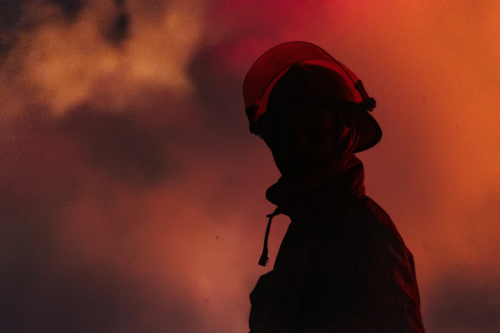
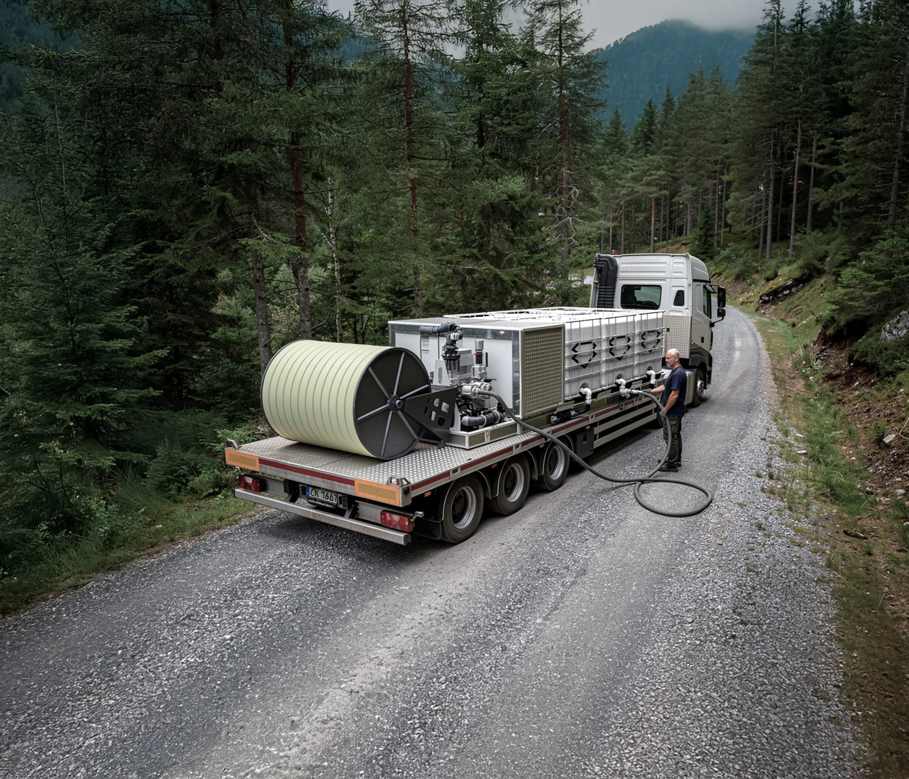
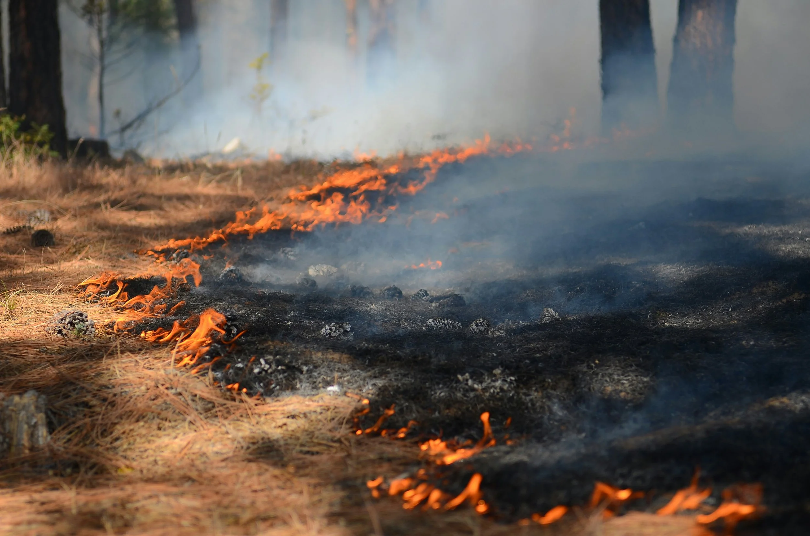
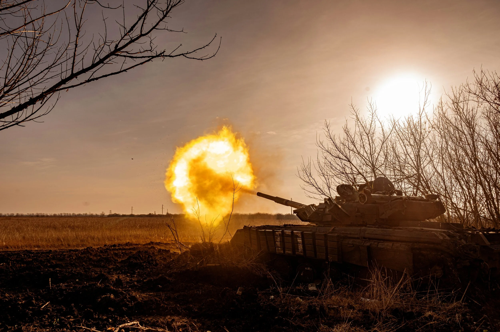

When Minutes
Matter.
We provide modular fire and readiness systems designed for decentralised first-line response in high-risk environments. When minutes matter, the first response decides the outcome.
Når Minutter
Teller.
Vi leverer modulære brann- og beredskapssystemer for desentralisert førstelinjeberedskap i høyrisikomiljøer. Når minutter teller, avgjør den første responsen utfallet.
Коли Хвилини
Важливі.
Ми надаємо модульні системи пожежогасіння та готовності для децентралізованого реагування на першій лінії у середовищах підвищеного ризику. Коли хвилини вирішують — перша реакція визначає результат.

Lack of Readiness
Mangel på Beredskap
Недостатня готовність
Climate change, prolonged drought, and geopolitical instability are reshaping regional and industrial risk. Fires and related incidents can escalate from manageable to uncontrollable within minutes. The critical factor is the initial response phase — the brief operational window where incidents remain containable.
Klimaendringer, langvarig tørke og geopolitisk ustabilitet omformer regionale og industrielle risikoer. Branner og relaterte hendelser kan eskalere fra håndterbare til ukontrollerbare på minutter. Den kritiske faktoren er den innledende responsfasen — det korte operative vinduet der hendelser fortsatt er kontrollerbare.
Зміна клімату, тривалі посухи та геополітична нестабільність змінюють регіональні та промислові ризики. Пожежі та пов'язані інциденти можуть вийти з-під контролю протягом хвилин. Критичним є початковий етап реагування — коротке операційне вікно, поки інцидент ще можна стримати.
This is typically where readiness proves weakest and response times longest. Rapid, local action before escalation requires:
Dette er vanligvis der beredskapen er svakest og responstidene lengst. Rask, lokal handling før eskalering krever:
Саме тут готовність найслабша, а час реагування — найдовший. Швидкі місцеві дії до ескалації потребують:
- Speed, simplicity and readiness
- Operational capability even where access is limited
- An operational plan to deploy across regions
- Hastighet, enkelhet og beredskap
- Operasjonell kapasitet selv der tilgangen er begrenset
- En operasjonell plan for utsendelse over regioner
- Швидкість, простота та готовність
- Операційні можливості навіть в умовах обмеженого доступу
- Операційний план розгортання по регіонах
Skjoldr Modular Rig
Skjoldr Modulrigg
Модульна установка Skjoldr
A scalable response and preparedness system designed for reliable performance in demanding conditions. Modular tank capacity, integrated pump and water cannon, robust construction — simplified for mobility and early first-line response.
Et skalerbart beredskaps- og responssystem designet for pålitelig ytelse under krevende forhold. Modulær tankkapasitet, integrert pumpe og vannkanon, robust konstruksjon — forenklet for mobilitet og tidlig førstelinjeberedskap.
Масштабована система реагування та готовності для надійної роботи у складних умовах. Модульна ємність баків, інтегрований насос і водяна гармата, міцна конструкція — спрощена для мобільності та оперативного реагування на першій лінії.
- 8–12 tanks 1,000-litre capacity each 1 000 liter kapasitet per tank ємністю 1 000 літрів кожен
- 60 m operational spray reach operasjonell sprayrekkevidde операційна дальність розпилення
- 0.15–0.8 ha area coverage per deployment arealdekning per utsendelse покриття площі за розгортання
- 4–8 BAR pump operating pressure pumpens driftstrykk робочий тиск насоса
- 6.5 × 2.5 m platform footprint plattformens fotavtrykk габарити платформи
Can be pre-deployed or mounted on hook-lift truck, forwarder, or trailer for rapid relocation across rugged, remote, and industrial environments.
Kan forhåndsdeploys eller monteres på hyvebil, lassbærer eller tilhenger for rask forflytning i kuperte, avsidesliggende og industrielle miljøer.
Може бути розгорнута заздалегідь або змонтована на вантажівці з гаковим підйомником, форвардері або причепі для швидкого переміщення у важкопрохідних, віддалених і промислових середовищах.

Built for the Most Demanding Scenarios
Bygget for de Mest Krevende Scenariene
Створено для найскладніших сценаріїв
From wildfire suppression to community resilience — one system, multiple missions.
Fra skogbrannslukking til lokalsamfunnsberedskap — ett system, mange oppdrag.
Від гасіння лісових пожеж до захисту громад — одна система, кілька місій.


Trusted by Operators
Stolt på av Operatører
Довіряють оператори
The Skjoldr rig gave our unit a credible first-response capability we simply didn't have before. The speed of deployment and the training platform are what make the difference.
Skjoldr-riggen ga enheten vår en troverdig førstelinjeberedskap vi rett og slett ikke hadde tidligere. Utsendelseshastigheten og opplæringsplattformen er det som utgjør forskjellen.
Установка Skjoldr надала нашому підрозділу реальні можливості першого реагування, яких у нас раніше просто не було. Швидкість розгортання та навчальна платформа — ось що має значення.
In high-risk environments, complexity kills response time. Skjoldr's modular design and structured training means operators are confident and ready — not hesitating when it counts.
I høyrisikomiljøer dreper kompleksitet responstid. Skjoldrs modulære design og strukturerte opplæring betyr at operatørene er trygge og klare — ikke nølende når det teller.
У середовищах підвищеного ризику складність знищує час реагування. Модульний дизайн Skjoldr та структуроване навчання гарантують, що оператори впевнені та готові — а не вагаються, коли це важливо.
Training Modules
Opplæringsmoduler
Навчальні модулі
Six progressive modules take you from rig overview to advanced deployment tactics.
Seks progressive moduler tar deg fra riggoversikt til avansert utsendelsestaktikk.
Шість прогресивних модулів — від огляду установки до тактики розгортання.
Rig Overview & Components
Riggoversikt og Komponenter
Огляд установки та компоненти
Identify all 8 components, understand their function, and learn spatial orientation on the rig.
Identifiser alle 8 komponenter, forstå funksjonen og lær romlig orientering på riggen.
Визначте всі 8 компонентів, зрозумійте їх функції та навчіться орієнтуватися на установці.
Open Module → Åpne modul → Відкрити модуль →Pre-Deployment Checks
Kontroll Før Utsendelse
Перевірки перед розгортанням
Systematic inspection routines, fault identification, and readiness verification protocols.
Systematiske inspeksjonsrutiner, feilidentifisering og beredskapsverifiseringsprotokoller.
Систематичні процедури перевірки, виявлення несправностей і верифікація готовності.
Water Cannon Operation
Betjening av Vannkanon
Управління водяною гарматою
Remote control procedures, trajectory calculation, and suppression pattern strategies.
Fjernkontrollprosedyrer, baneberegning og slukkingsmønsterstrategier.
Процедури дистанційного управління, розрахунок траєкторії та стратегії придушення.
Hydraulic Systems
Hydrauliske Systemer
Гідравлічні системи
Pump operation, PTO integration, pressure management, and fault response.
Pumpeoperasjon, kraftuttakintegrering, trykkstyring og feilrespons.
Управління насосом, інтеграція ВВП, управління тиском та реагування на несправності.
Field Deployment Tactics
Taktikk for Feltoperasjoner
Тактика польового розгортання
Scene positioning, multi-team coordination, and adaptive response to dynamic incidents.
Sceneplassering, koordinering av flere lag og adaptiv respons på dynamiske hendelser.
Позиціонування на місці, координація кількох команд та адаптивне реагування.
Maintenance & Post-Op
Vedlikehold og Etteroperasjon
Технічне обслуговування та постопераційні процедури
Post-deployment cleaning, component inspection, storage protocols, and log completion.
Etterutsendelsesrengjøring, komponentinspeksjon, lagringsprotokoll og loggutfylling.
Очищення після розгортання, перевірка компонентів, протоколи зберігання і журнали.
Want to see Skjoldr in action?
Vil du se Skjoldr i aksjon?
Хочете побачити Skjoldr в дії?